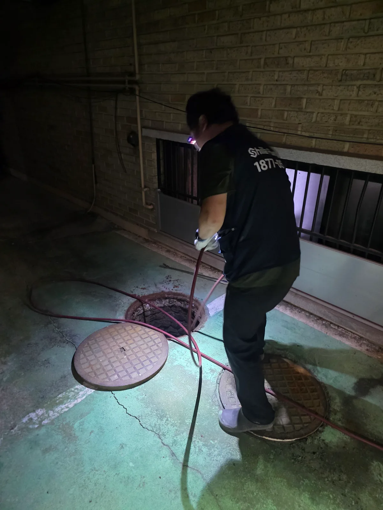
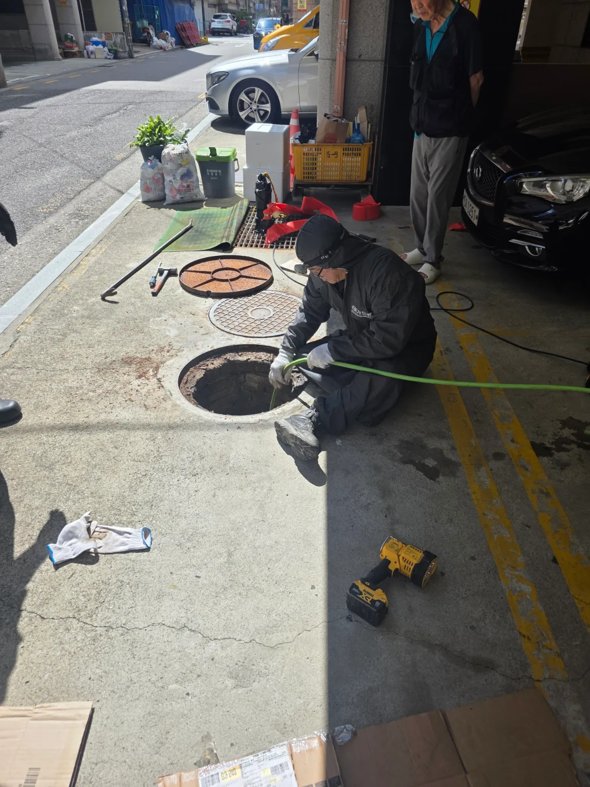

송파구 잠실동 변기막힘 | 원인은 정화조 출수관 새벽 3시까지 고압세척했습니다
송파구 잠실동 변기막힘 현장에서 관통기와 석션이 듣지 않아 변기를 탈거한 결과 오수관이 가득 차 있었고 204샤프트와 내시경검사 후 정화조
서울 · 송파구
신라건축설비가 송파구에서 직접 진단하고 해결한 실제 작업 기록입니다.

송파구 잠실동 변기막힘 현장에서 관통기와 석션이 듣지 않아 변기를 탈거한 결과 오수관이 가득 차 있었고 204샤프트와 내시경검사 후 정화조

송파구 석촌동 변기막힘 실내 관통과 내시경 진단 후 외부 오수관까지 추적해 고압세척 및 통수 작업 진행

송파구 거여동 배관공사 욕실 바닥을 철거해 몰탈이 굳은 기존 배관을 교체하고 배수 구배를 고려한 신설 배관 통수검사

송파구 방이동 하수구막힘 감자탕 식당 외부 집수정에서 배관에 접근해 샤프트와 고압세척으로 유지방을 제거하고 통수 확인

송파구 가락동 하수구막힘 어린이집 반지하 설비공간에 진입해 단독 배수관을 샤프트로 작업하고 정상 배수 복원

송파구 가락동 변기막힘 바닥으로 넘친 변기 역류 원인을 확인하고 외부 오수관 타공과 고압세척 후 내시경으로 배수 확인

송파구 잠실동 변기막힘 변기 역류 징후를 점검하고 막힘 원인을 제거한 뒤 정상 배수 확인